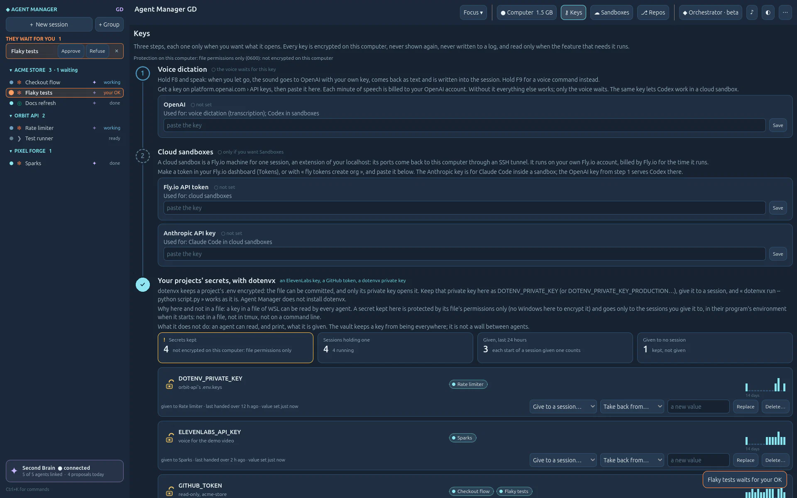

F8Dictation
Into a box you send with Enter. With your OpenAI key, about $0.003 a minute, shown.
Open source · Local-first · MIT
Your agent lab.
Claude Code, Codex and your shells, side by side: isolated, observed, in your control. Launch an agent already set up for its project, watch every one of them, and give the risky work a branch, a sandbox or a machine of its own.
Every agent. Every environment. One control room.
Filmed from the real app on a demonstration workspace · Fly.io is a stand-in in the film, nothing was billed
What is in the lab
From the moment you launch an agent to the cloud machine it borrows. Every picture below is the real app, captured on a private virtual display with a fictional workspace.
01 · Session manager
Claude Code, Codex or a plain shell, in a real terminal that keeps running in tmux when you close the window. What Agent Manager adds is everything set up before the first prompt.
~/.ssh.am/<name>, so ten agents share a repository without stepping on each other. A connected repository: its folder and its key
A worktree and a branch of its own
What it may do, before it starts
The Second Brain, with its own key
Follow it from your phone
One secret, for this session only
A connected repository: its folder and its key
A worktree and a branch of its own
What it may do, before it starts
The Second Brain, with its own key
Follow it from your phone
One secret, for this session only
Planned Launch presets: keep a set of these choices under a name and start from it in one click. Today a group already carries its default permission level.
02 · Interface, views, themes
Not columns of text: pages drawn like instruments, a terminal of our own (Ghostty's core, drawn by Godot), five ways to look at your sessions and seven themes shared with Second Brain. Try them.

03 · The control room
Claude Code and Codex report what they do through their own hooks; Agent Manager turns it into lights you read from across the room. The ones that need you come first.
04 · Continuity
Every session keeps every conversation it ever had. Agents live in a private tmux server, so the app can close and the work goes on.


05 · Better together
Agents forget everything when their window closes. Agent Manager wires each one to Second Brain GD, its companion app, so what one agent learns, the next one knows, and so do you.
Runs the agents. Gives each one its own Brain key at launch, says how to document the work, and keeps each session's summary.
Keeps the project: vision, decisions, the owner's words, where things stand. Its archivist files every proposal with your rules, and you see who proposed what.
git log.

06 · Built-in MCP
Every Claude Code or Codex session is offered Agent Manager's own MCP server, nothing to install. A lead agent looks at any session and starts helpers of its own: they show up in your list, « ↳ Lead », in real terminals you can take over at any time.
No tool presses keys in someone else's session: an agent writes only to its own children and never approves on another's behalf. ◐ › Connect other tools plugs the same server into any MCP client outside the app: list, read and start, never type nor approve.
| Tool | Does | On |
|---|---|---|
list_sessions | every session and its state | any |
session_status | working, waits, asks, done | any |
read_screen | what a terminal shows now | any |
start_session | a child: Claude Code, Codex, a shell | new |
send_to_session | write to a session | its children |
wait_for_session | until a child is done or waits | its children |

Built on it · Orchestrator beta
A Claude Code session with an orchestrator's instructions and a few more tools
(list_repos, ask_owner, finish_session), for all your connected
repositories. It reads your Second Brain, proposes a plan and waits for your OK, starts each task in its own
worktree with the tool and model your rules choose, and hands you every result to review. It never pushes
nor merges: you do.


07 · Repositories and keys
Connect a repository on GitHub or Azure DevOps: Agent Manager makes an SSH key for it, checks
it, and gives it to that repository's sessions only. No ~/.ssh to edit, no key shared between
projects.
GIT_SSH_COMMAND, with its own known_hosts: nothing written to your SSH config.
08 · Your machine
The ground button's page reads this computer and WSL: memory, processors, the true room on the disk, and the memory each session holds, from the last hour to the last seven days. Hover a bar, and it tells you who weighs what.

09 · Cloud sandboxes
Give a risky task its own Fly.io machine, with your own Fly token. Pick a size and see Fly.io's published price before you deploy; then watch its health and bring its ports home through one SSH connection.
one SSH connection · host key checked · nothing made public


Filmed with stand-ins for Fly.io and SSH: nothing was deployed, nothing was billed. The prices are Fly.io's published ones, as the app shows them.
10 · Voice and mobile
Hold F8 and speak: your words appear in a see-through box, phrase by phrase, and stay there when you release the key. Read, correct, add; Enter sends all of it, and nothing before.
Into a box you send with Enter. With your OpenAI key, about $0.003 a minute, shown.
« approve Flaky tests », « who is waiting? », « grid view ». Plain rules, no model.
On by default for Claude Code: follow and answer a session from claude.ai/code or the Claude app.


11 · Keys, secrets, safety
Keys › Secrets keeps your projects' keys under a name, encrypted for your Windows user and never shown again. Each one goes only to the sessions you give it to, in its program's environment when it starts: not in a file, not to the others.
DOTENV_PRIVATE_KEY here, give it to the session, dotenvx run -- works as it is.
A level, a file access and git rights for each session, with defaults per group. Agent Manager fills Claude Code's and Codex's own settings; it adds no permission system of its own.
~/.ssh, .env files and your keys: a guard rail on the agent's own tools, not a wall.
On 127.0.0.1 only, behind a token. Nothing leaves your computer unless you ask.
OpenAI, Fly.io, Anthropic: DPAPI on Windows, never shown again, never logged.
Agent CLIs run as you installed them. Agent Manager never reads, copies or relays a subscription token.
Tokens per session, per day and per tool, read from the agents' own logs. No invented dollar amounts.
It's a lab
Agent Manager GD is built in loops, by the coding agents it now runs, with its owner testing every round. Alpha, open, honest about what works and what does not yet. Run it on your own machine; don't put it on the internet unless you know what you are doing (TCP/IP, TLS, authentication, infrastructure). The AI notice →
The window, the native terminal (libghostty-vt), views, voice. Windows or Linux.
python3 -m engine, standard library only: sessions, hooks, keys, git, MCP, sandboxes.
A private server (tmux -L agmgd): sessions outlive the app, in WSL on Windows.
Claude Code, Codex, git, ssh, flyctl, Second Brain GD: found, never bundled.
Built in loops
Each loop ends with tests, real screenshots and a journal entry, then the next one starts. Pick a dot on the line, a theme, or search.
Website · Nov 2026
The real app filmed on a private virtual display, cut and narrated; this home page rebuilt around it, one section per feature with new screenshots, and this line of loops that scales.
Loop 39 · Safety
Keys › Secrets keeps your projects' keys under a name, encrypted, never shown again; each goes only to the sessions you give it to, in its environment when it starts. A card per secret with who holds it and fourteen bars of handovers. Works with dotenvx as it is.
Loop 38 · Cloud
Every sandbox made here stays listed, destroyed ones too, with its life over thirty days and what it cost. On a running one, Tunnel and ports: bring a port to your localhost, a SOCKS proxy, a way back you allow, a wire per port with what runs each way.
Loop 37 · Git
One repository per line with its host, its key's state and age, what that key opens and the folder's branch; a line unfolds to the key and the metro map of its branches. Azure DevOps connects with the RSA key it asks for.
Loop 36 · Control room
It reads Windows, WSL and the distribution before the programs and the engine, says why the engine does not answer, installs what is missing on your click in a terminal you see, and has an engine room: memory by session, from the last hour to seven days.
Loop 35 · Control room
Groups and sessions move on screen before the engine has answered; a dictation is written once more, in one piece.
Loop 34 · Voice
What you say appears as you say it, stays in a box, and Enter sends all of it.
Loop 33 · Control room
Measured, then fixed: opening a session again went from 80 ms to 8.
Loop 32 · Control room
The list and « They wait for you » in lines: twenty sessions where eight tiles fitted.
Loops 27–31 · Safety
Level, file access and git rights per session, changed on an open agent on its own conversation; one view for all of them.
Loops 25–26 · Brain & agents
One agent plans across your repositories, asks first, delegates in worktrees with the tool and model your rules choose, and hands you each result.
Loop 24 · Safety
From Ask before acting to No permission; paths no agent may touch at any level.
Loop 23 · Control room
Approve and Refuse answer at once; one notification per request.
Loop 22 · Brain & agents
A live badge, a ✦ light per session, a pulse when an agent uses the Brain.
Loops 19–21 · Website
Twelve guides with a real screenshot per step, the Docs, one command that checks it all.
Loops 17–18 · Website
Every screenshot from the real app, on a fictional workspace, in one command.
Loop 16e · Brain & agents
The agent orients in the Brain, then proposes your words, decisions and its journal.
Loops 12–16 · Cloud
Fly.io machines per agent, tunnels, budgets that only pause; usage per session and day; the installer.
Loops 10–11 · Voice
Encrypted keys, F8 dictation, F9 commands.
Loops 8–9 · Git
Diff review with line comments; deploy keys made for you.
Loop 7 · Brain & agents
Wrap up, summaries proposed to the Brain, Brief from the last one.
Loop 6 · Brain & agents
A Second Brain key per session; agents pilot agents through MCP.
Loop 5 · Control room
A history that never forgets a conversation.
Loop 4 · Control room
The tree, « They wait for you », Approve from the list, alerts.
Loop 3 · Control room
A local engine and a private tmux server: close the app, the agents keep working.
Loop 2 · Control room
libghostty-vt in Godot, on Linux and native Windows: accents, true colour, mouse.
Your agent lab.
Windows (with WSL) or Linux. Unzip, run the installer for your user, and the Setup check tells you what is missing.
Open Source · MIT Licensed